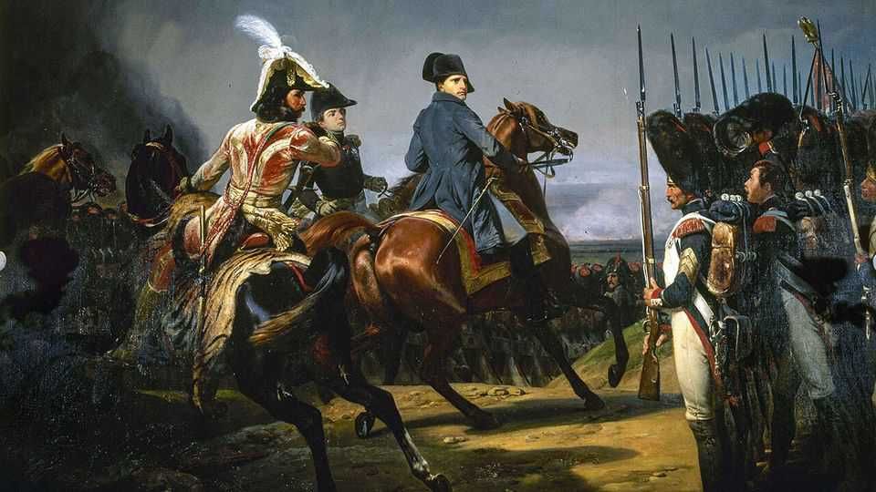

Leadership lessons from Napoleon
How the French emperor’s management style ultimately led to his fall

Oct 22nd 2026
What management tips can you learn from conquerors? Put aside oppression, and there are lessons about delegation, motivation, recruitment and team building. Alexander the Great refused to drink water before battle to stand in solidarity with his men. Caesar marched on foot alongside his men, even swimming across rivers, to demonstrate his derring-do. When his army wobbled, he would fling himself in the way of his fleeing men, “even catching them by the throat and forcing them to face the enemy”, according to Suetonius, a Roman historian. Diocletian divided the Roman Empire into four, and shared power while keeping a firm central grip.
In 2014 Andrew Roberts, a prolific British historian and member of the House of Lords, published an excellent biography of Napoleon and his boldness on the battlefield. In a new book he examines Napoleon’s marshal system. The day after he proclaimed himself emperor of France in 1804, Napoleon appointed 18 “marshals of the empire”, later increasing the tally to 26. They were to be “the swords around Napoleon’s throne”, the army’s most venerated figures and the pinnacle of French society.
Some recruits came from the nobility; others were craftsmen’s sons. They were indulged with fortunes, land and even marriages into the imperial family. Each was given a deep-blue velvet high-collared uniform trimmed with golden embroidery, complete with a red silk sash, and a baton inscribed with the gold imperial eagles. Napoleon made six of them princes and crowned two kings.
The marshals’ elite leadership team was built to carry out Napoleon’s orders and bring glory to France by executing his new theory of warfare, with fewer set-piece sieges and more agile manoeuvres, thanks to an army that lived off the land. But Napoleon also devised an efficient modern management system, based on the recruitment of brilliant talent, doling out of lavish rewards, intolerance of weakness and a demand for total loyalty.
For all this Napoleon relied heavily on Louis-Alexandre Berthier, his chief of staff, first marshal and a skilled manager with a remarkable grasp of detail. A short, strong man who was said to be able to fall asleep with one eye open, Berthier was a former topographical engineer who had volunteered to sail across the Atlantic to help the Americans in their war for independence, drawing up a detailed map of the coast of Rhode Island.
Berthier divided the army staff into four branches, to cover everything from intelligence to supplies. Divisional commanders had to provide twice-daily updates on the whereabouts of every soldier; these dossiers, like proto-spreadsheets, were sent in 18 large volumes twice a month from the war ministry to Napoleon. In Berthier’s written orders “all names of places, rivers, enemy generals and regiments were underlined,” writes Lord Roberts. New information flowed constantly, from gunpowder stocks or the provision of shoes to the state of troops’ morale. Berthier and Napoleon travelled in a coach fitted with cupboards and drawers for books, maps and a card index listing the location of every unit of the Grande Armée.
To motivate his marshals, Napoleon issued performance reviews in campaign bulletins, showering praise for heroic achievements along with crushing criticism. Success was rewarded. An attentive manager, Napoleon also liked to offer his marshals personalised advice on how to galvanise the troops. “Do not neglect to fanaticise the soldier and to electrify his imagination to the utmost,” he wrote to André Masséna as he was facing the Austrian army.
Yet in the end the management system failed him. As the empire expanded, Napoleon insisted on total control, cramped his marshals’ autonomy and undermined their effectiveness. Worse, he came to weaken the very system he had built. His incentive scheme became capricious, as he overlooked those who deserved praise in some campaign bulletins, or used marshals as scapegoats.
Rather than generating creative tension, he fostered destructive rivalry. The danger, Lord Roberts notes, was “when marshals started to see warfare not as a team enterprise so much as a race among rivals for individual triumph and fame”. Napoleon even boasted of stoking “continual jealousy”: “I am careful to keep my ministers and generals at variance among themselves, in order that each may reveal to me the faults of the other.”
The marshals began to come to blows after Napoleon’s victory over the combined Russian and Austrian armies at Austerlitz in 1805, and things just got worse. For all his skill, writes Lord Roberts, “Napoleon had a great capacity for sheer spitefulness.” By the time the emperor rode into his last battle in 1815, only two marshals accompanied him. Napoleon’s “approach to leadership”, the author notes, “ultimately left him almost completely bereft of the support he so desperately needed as he faced his Waterloo”. ■